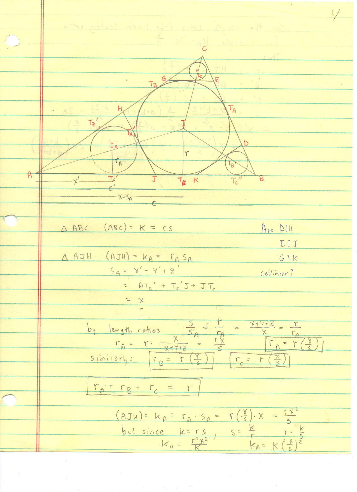
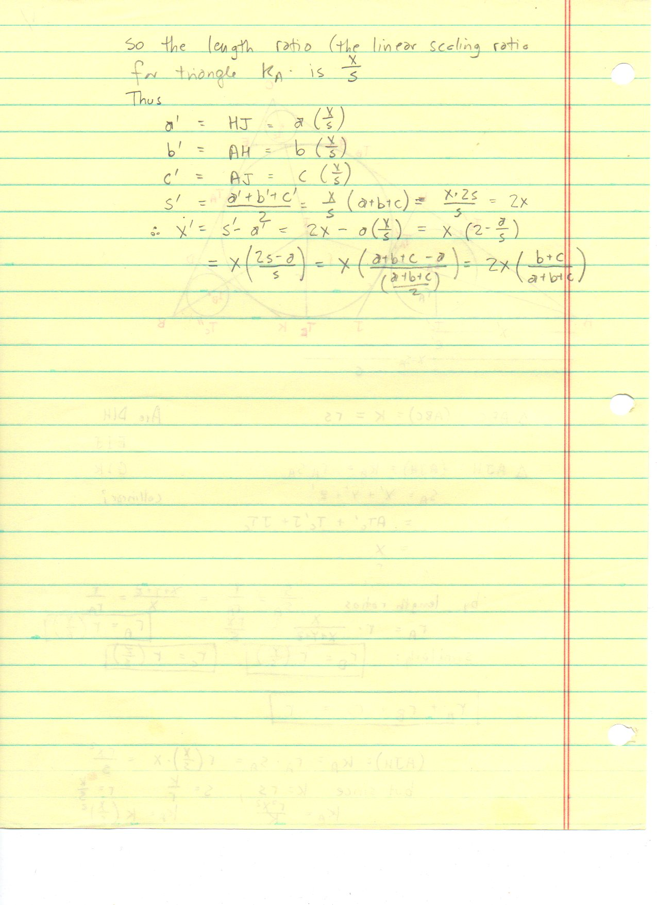
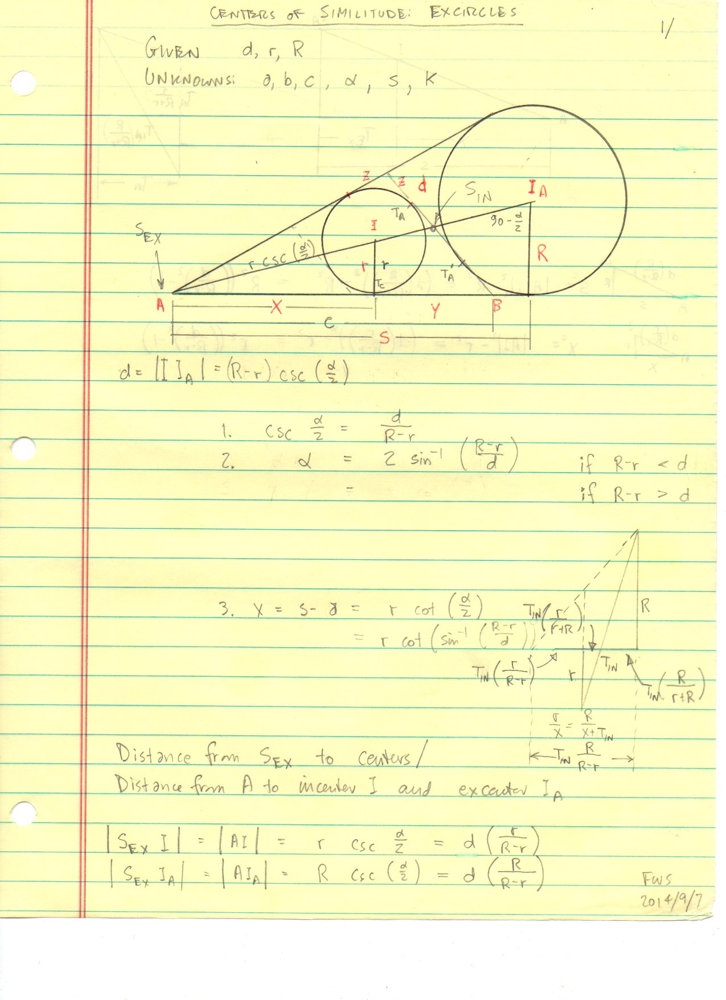
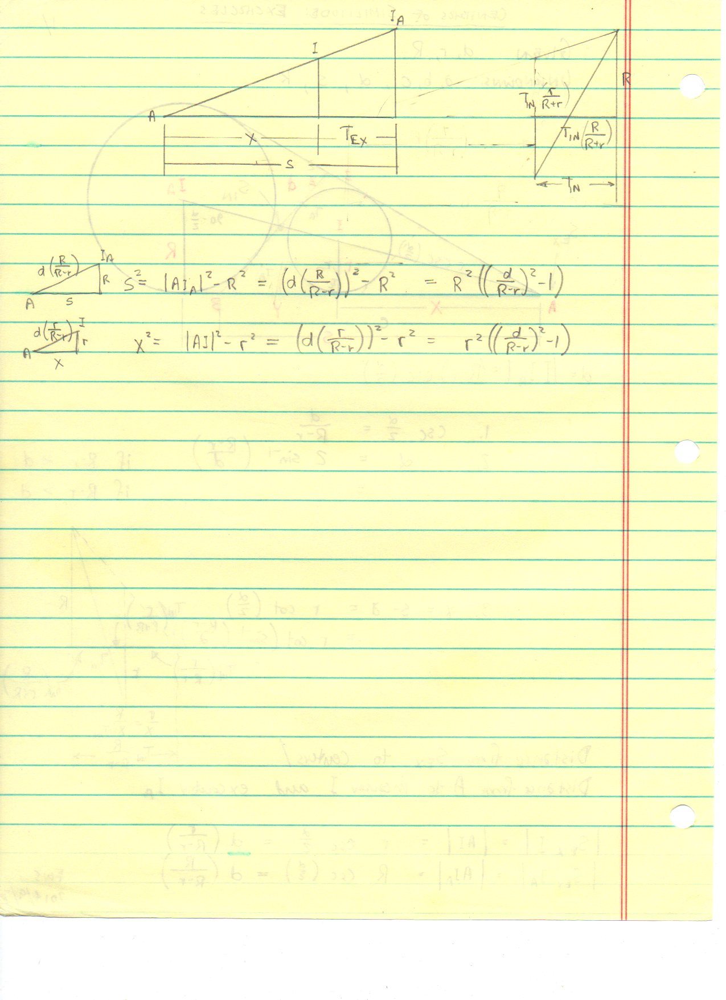
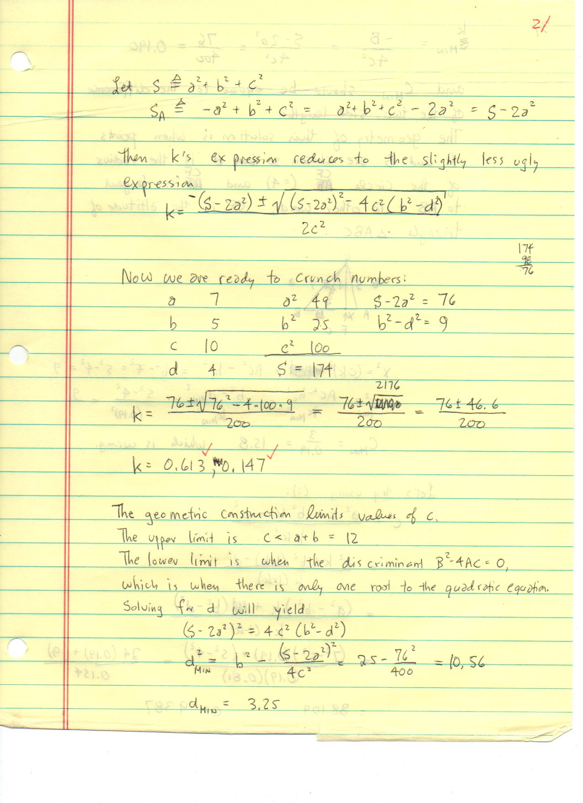
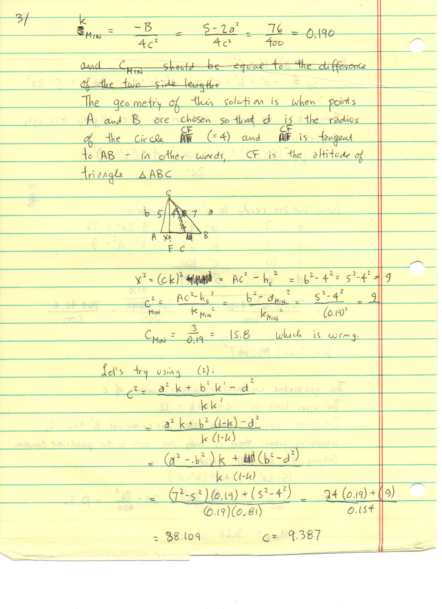
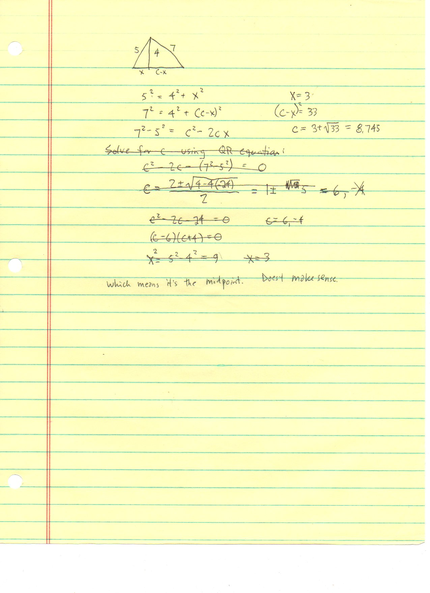
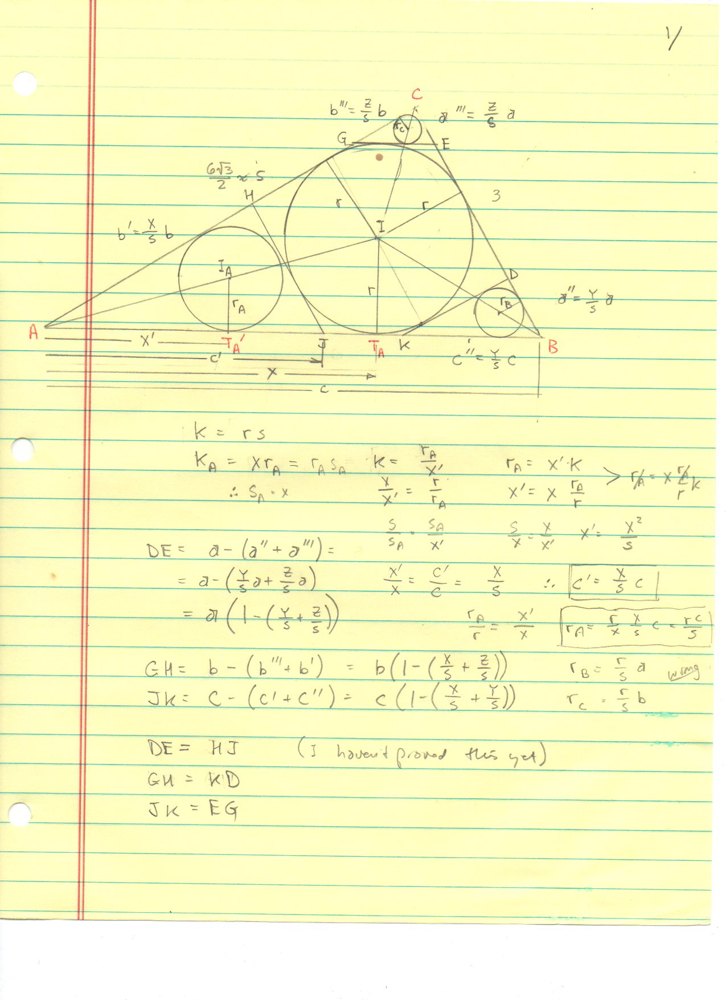
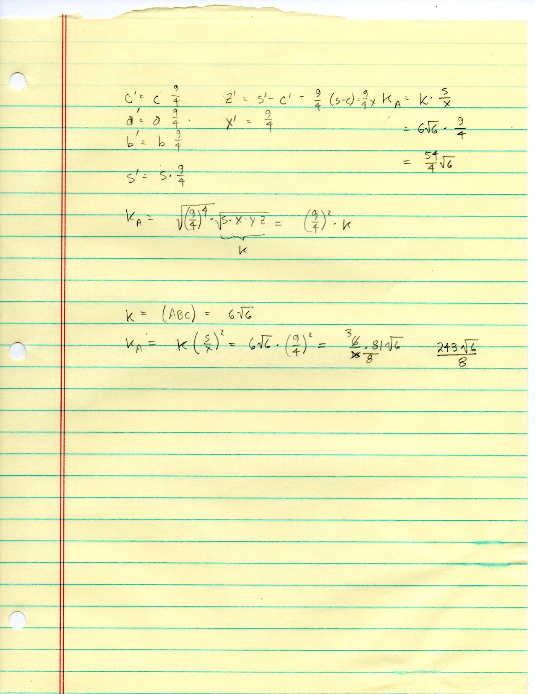

F.48 Verisimilitude, Corner Subtriangles, and Excircle Homothety — Folios¶
Archival manuscript scans and diplomatic transcriptions from seelig’s notebooks for F.48 (Verisimilitude, Corner Subtriangles, and Excircle Homothety) (SeeligNotebooks).
Folio 0306 (Page 1 of 9): Corner Subtriangles Tangent to the Incircle — Semiperimeter s_A = x (001)¶


Folio 0306 (original scan 0306.jpg) from resources/seelig/48_verisimilitude.¶
Diplomatic Mathematical & Geometric Transcription
Diplomatic Transcription — Folio 0306 (0306.jpg, Sheet 1 of 9):
Proves by equal tangent segments that the corner subtriangle cut off at vertex \(A\) by a tangent to the incircle parallel to \(BC\) has semiperimeter \(s_A = s - a = x\).
Editorial & Symbolic Notes
Archival scan 0306.jpg from Fred W. Seelig’s notebook dossier on F.48 Verisimilitude, Corner Subtriangles, and Excircle Homothety (Page 1 of 9). Companion OpenDocument worksheet(s): Centers of Similitude, Incircle-Incenter, Stewart's Theorem. Classical Euclidean foundations: IV.4, VI.4. Kimberling Encyclopedia of Triangle Centers loci: X(1) — Incenter, X(55) — Internal Center of Similitude of Incircle and Circumcircle, X(56) — External Center of Similitude of Incircle and Circumcircle.
Folio 0307 (Page 2 of 9): Inradii Sum Identity r_A + r_B + r_C = r (002)¶


Folio 0307 (original scan 0307.jpg) from resources/seelig/48_verisimilitude.¶
Diplomatic Mathematical & Geometric Transcription
Diplomatic Transcription — Folio 0307 (0307.jpg, Sheet 2 of 9):
Uses homothety ratio \(x/s\) to derive \(r_A = r(x/s), K_A = K(x/s)^2\), and \(r_A + r_B + r_C = r(x+y+z)/s = r\).
Editorial & Symbolic Notes
Archival scan 0307.jpg from Fred W. Seelig’s notebook dossier on F.48 Verisimilitude, Corner Subtriangles, and Excircle Homothety (Page 2 of 9). Companion OpenDocument worksheet(s): Centers of Similitude, Incircle-Incenter, Stewart's Theorem. Classical Euclidean foundations: IV.4, VI.4. Kimberling Encyclopedia of Triangle Centers loci: X(1) — Incenter, X(55) — Internal Center of Similitude of Incircle and Circumcircle, X(56) — External Center of Similitude of Incircle and Circumcircle.
Folio 0308 (Page 3 of 9): Infinite Chain of Tangential Corner Incircles (003)¶


Folio 0308 (original scan 0308.jpg) from resources/seelig/48_verisimilitude.¶
Diplomatic Mathematical & Geometric Transcription
Diplomatic Transcription — Folio 0308 (0308.jpg, Sheet 3 of 9):
Sums the geometric series of nested incircles marching into vertex \(A\) with ratio \(\rho_A = (1 - \sin(\alpha/2))/(1 + \sin(\alpha/2))\).
Editorial & Symbolic Notes
Archival scan 0308.jpg from Fred W. Seelig’s notebook dossier on F.48 Verisimilitude, Corner Subtriangles, and Excircle Homothety (Page 3 of 9). Companion OpenDocument worksheet(s): Centers of Similitude, Incircle-Incenter, Stewart's Theorem. Classical Euclidean foundations: IV.4, VI.4. Kimberling Encyclopedia of Triangle Centers loci: X(1) — Incenter, X(55) — Internal Center of Similitude of Incircle and Circumcircle, X(56) — External Center of Similitude of Incircle and Circumcircle.
Folio 0309 (Page 4 of 9): Numerical Evaluation on the (5, 6, 7) Triangle (004)¶


Folio 0309 (original scan 0309.jpg) from resources/seelig/48_verisimilitude.¶
Diplomatic Mathematical & Geometric Transcription
Diplomatic Transcription — Folio 0309 (0309.jpg, Sheet 4 of 9):
Evaluates \(x/s = 4/9, y/s = 3/9, z/s = 2/9\) and checks \(r_A + r_B + r_C = r\) and \(K_A + K_B + K_C = \frac{29}{81}K\).
Editorial & Symbolic Notes
Archival scan 0309.jpg from Fred W. Seelig’s notebook dossier on F.48 Verisimilitude, Corner Subtriangles, and Excircle Homothety (Page 4 of 9). Companion OpenDocument worksheet(s): Centers of Similitude, Incircle-Incenter, Stewart's Theorem. Classical Euclidean foundations: IV.4, VI.4. Kimberling Encyclopedia of Triangle Centers loci: X(1) — Incenter, X(55) — Internal Center of Similitude of Incircle and Circumcircle, X(56) — External Center of Similitude of Incircle and Circumcircle.
Folio 0310 (Page 5 of 9): Centers of Similitude: Excircles — Part 1 (005, FWS 2014/9/7)¶


Folio 0310 (original scan 0310.jpg) from resources/seelig/48_verisimilitude.¶
Diplomatic Mathematical & Geometric Transcription
Diplomatic Transcription — Folio 0310 (0310.jpg, Sheet 5 of 9):
Models vertex \(A\) and the internal/external touchpoint harmonic conjugates along line \(AI I_A\) for the incircle and \(A\)-excircle.
Editorial & Symbolic Notes
Archival scan 0310.jpg from Fred W. Seelig’s notebook dossier on F.48 Verisimilitude, Corner Subtriangles, and Excircle Homothety (Page 5 of 9). Companion OpenDocument worksheet(s): Centers of Similitude, Incircle-Incenter, Stewart's Theorem. Classical Euclidean foundations: IV.4, VI.4. Kimberling Encyclopedia of Triangle Centers loci: X(1) — Incenter, X(55) — Internal Center of Similitude of Incircle and Circumcircle, X(56) — External Center of Similitude of Incircle and Circumcircle.
Folio 0311 (Page 6 of 9): Centers of Similitude: Excircles — Part 2 (006)¶


Folio 0311 (original scan 0311.jpg) from resources/seelig/48_verisimilitude.¶
Diplomatic Mathematical & Geometric Transcription
Diplomatic Transcription — Folio 0311 (0311.jpg, Sheet 6 of 9):
Derives \(|AI| = d\frac{r}{R-r}\) and \(|AI_A| = d\frac{R}{R-r}\) (where \(R = r_a\) is the exradius and \(d = |II_A|\)).
Editorial & Symbolic Notes
Archival scan 0311.jpg from Fred W. Seelig’s notebook dossier on F.48 Verisimilitude, Corner Subtriangles, and Excircle Homothety (Page 6 of 9). Companion OpenDocument worksheet(s): Centers of Similitude, Incircle-Incenter, Stewart's Theorem. Classical Euclidean foundations: IV.4, VI.4. Kimberling Encyclopedia of Triangle Centers loci: X(1) — Incenter, X(55) — Internal Center of Similitude of Incircle and Circumcircle, X(56) — External Center of Similitude of Incircle and Circumcircle.
Folio 0312 (Page 7 of 9): Inverse Stewart Problem: Finding k for Given Cevian Length d (007)¶


Folio 0312 (original scan 0312.jpg) from resources/seelig/48_verisimilitude.¶
Diplomatic Mathematical & Geometric Transcription
Diplomatic Transcription — Folio 0312 (0312.jpg, Sheet 7 of 9):
Rearranges Stewart’s theorem into the quadratic \(c^2 k^2 - (c^2+a^2-b^2)k + (a^2-d^2) = 0\).
Editorial & Symbolic Notes
Archival scan 0312.jpg from Fred W. Seelig’s notebook dossier on F.48 Verisimilitude, Corner Subtriangles, and Excircle Homothety (Page 7 of 9). Companion OpenDocument worksheet(s): Centers of Similitude, Incircle-Incenter, Stewart's Theorem. Classical Euclidean foundations: IV.4, VI.4. Kimberling Encyclopedia of Triangle Centers loci: X(1) — Incenter, X(55) — Internal Center of Similitude of Incircle and Circumcircle, X(56) — External Center of Similitude of Incircle and Circumcircle.
Folio 0313 (Page 8 of 9): Worked Quadratic Example (a, b, c, d) = (7, 5, 10, 4) (008)¶


Folio 0313 (original scan 0313.jpg) from resources/seelig/48_verisimilitude.¶
Diplomatic Mathematical & Geometric Transcription
Diplomatic Transcription — Folio 0313 (0313.jpg, Sheet 8 of 9):
Solves for the two base division ratios \(k = 0.613\) and \(k = 0.147\) at which a cevian of length \(d=4\) meets base \(c=10\).
Editorial & Symbolic Notes
Archival scan 0313.jpg from Fred W. Seelig’s notebook dossier on F.48 Verisimilitude, Corner Subtriangles, and Excircle Homothety (Page 8 of 9). Companion OpenDocument worksheet(s): Centers of Similitude, Incircle-Incenter, Stewart's Theorem. Classical Euclidean foundations: IV.4, VI.4. Kimberling Encyclopedia of Triangle Centers loci: X(1) — Incenter, X(55) — Internal Center of Similitude of Incircle and Circumcircle, X(56) — External Center of Similitude of Incircle and Circumcircle.
Folio 0314 (Page 9 of 9): Discriminant & Minimum Cevian Length d_min = h_c (009)¶


Folio 0314 (original scan 0314.jpg) from resources/seelig/48_verisimilitude.¶
Diplomatic Mathematical & Geometric Transcription
Diplomatic Transcription — Folio 0314 (0314.jpg, Sheet 9 of 9):
Shows that the quadratic discriminant vanishes precisely when \(d = d_{\min} = h_c \approx 3.25\) (the perpendicular altitude).
Editorial & Symbolic Notes
Archival scan 0314.jpg from Fred W. Seelig’s notebook dossier on F.48 Verisimilitude, Corner Subtriangles, and Excircle Homothety (Page 9 of 9). Companion OpenDocument worksheet(s): Centers of Similitude, Incircle-Incenter, Stewart's Theorem. Classical Euclidean foundations: IV.4, VI.4. Kimberling Encyclopedia of Triangle Centers loci: X(1) — Incenter, X(55) — Internal Center of Similitude of Incircle and Circumcircle, X(56) — External Center of Similitude of Incircle and Circumcircle.